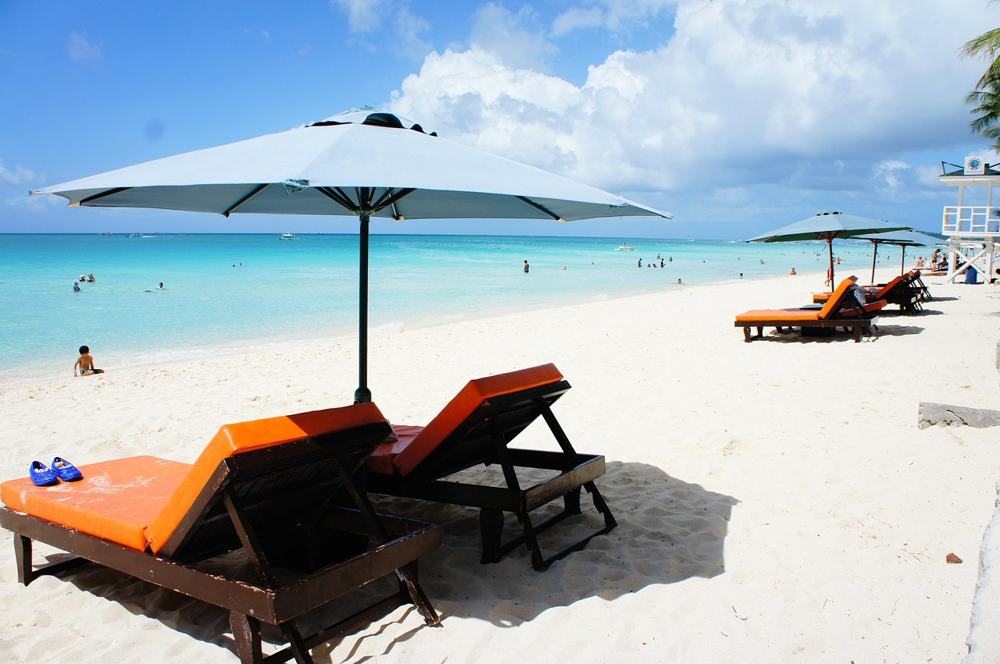

Boracay is a small island in the central Philippines. It's known for its resorts and beaches. Along the west coast, White Beach is backed by palm trees, bars and restaurants. On the east coast, strong winds make Bulabog Beach a hub for water sports. Nearby, the observation deck on Mount Luho offers panoramic views over the island. Offshore, coral reefs and shipwrecks are home to diverse marine life.
Highlights
• White Beach sunsets
• Island-hopping and snorkeling tours
• Parasailing and banana boat rides
• D’Mall shopping and food scene
• Panoramic views from Mount Luhol
Photos

Good to know
The best time to visit is during the dry season (November to April). Plastic bans and strict environmental rules help protect Boracay’s beauty — always follow local guidelines and respect the island’s ecosystem.
 Destinations
Destinations